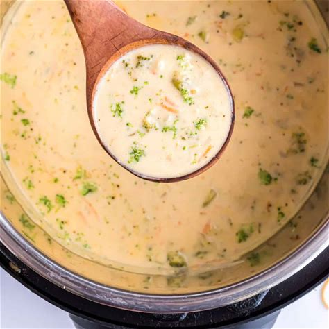

|  |
Description
A delicious and creamy soup for special ocassions! Good iron source because of the broccoli and also feeds the soul (but definitely not the wallet) because of the delicious and beloved cheddar. Great with toasted bread on the side
Ingredients
- 15g butter
- 1/2 onion, chopped
- 1/4 - 60ml cup melted butter
- 30g all-purpose flour
- 500 ml milk
- 500 ml chicken stock
- 225g coarsely chopped broccoli florets
- 110g matchstick-cut carrots
- 1 stalk celery
- 250g shredded sharp Cheddar
- salt and ground black pepper to taste
Steps
- Gather all the ingredients
- Melt 1 tablespoon butter in a skillet over medium-high heat. Add onion; cook and stir until tender and translucent, about 5 minutes. Set aside.
- Whisk 1/4 cup melted butter and flour together in a large saucepan over medium-low heat. Continue to whisk and cook, adding 1 to 2 tablespoons of milk if necessary to keep the flour from burning, 3 to 4 minutes.
- Gradually add milk while whisking constantly; stir in chicken stock and bring to a simmer.
- Cook until mixture is thickened, about 15 to 20 minutes.
- Add broccoli, carrots, celery, and sautéed onion; simmer until all the vegetables are tender, about 10 to 15 minutes.
- Stir in Cheddar cheese until melted; season with salt and pepper to taste before serving.
|